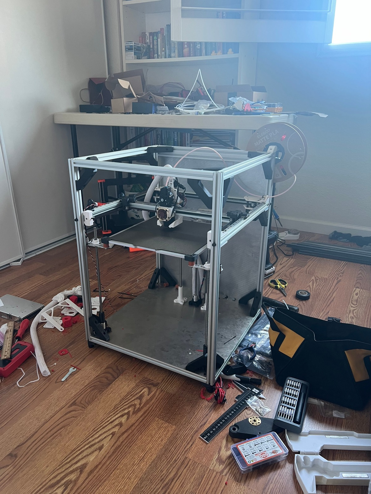
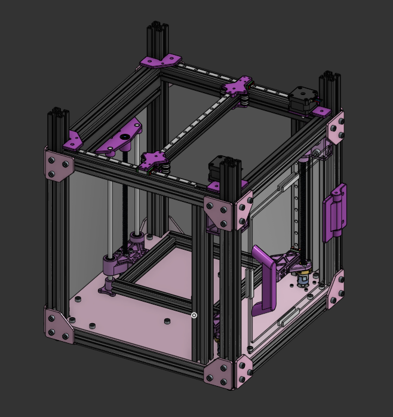
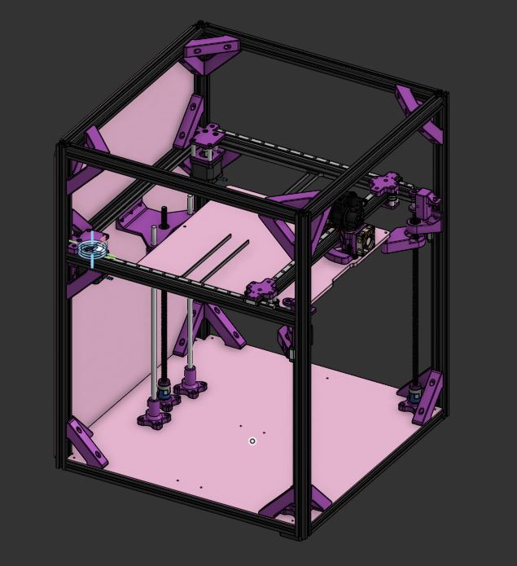
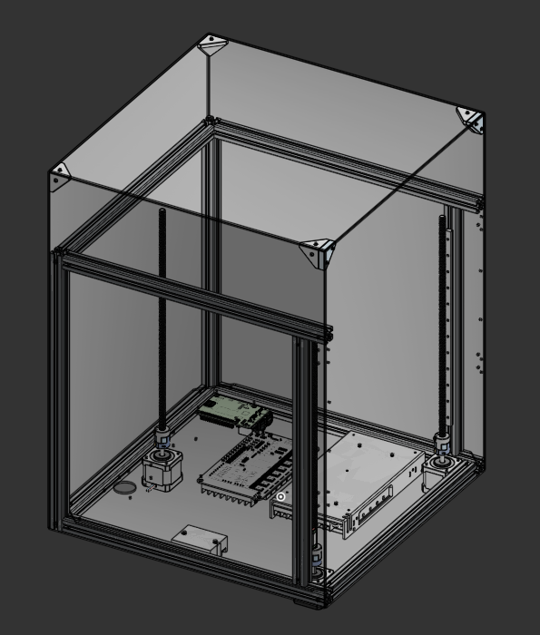

Fused deposition modeling (FDM, also known as FFF) is the most common form of additive manufacturing. It essentially lays molten material in lines, building up an object layer by layer.
There are two main types of FDM printers: bedslinger and CoreXY.
A bedslinger moves the print bed back and forth on the Y axis, while a CoreXY moves the print bed up and down.
I had a Bambu Lab A1 3D printer already, which is a popular bedslinger model. However, CoreXY printers are typically faster and have better print quality, since the model does not move around much during printing.
As a result, I decided to try my hand at designing my own CoreXY printer instead of just buying one.
I first modeled the printer in the computer-aided design (CAD) program Onshape. I took inspiration from the Voron 2.4 and Trident and the RatRig vCore 4 3D printers, which are popular open-source CoreXY designs.



Specs:
- Mainboard: BTT Octopus Pro v1.0 with Raspberry Pi 4B
- Firmware: Klipper
- Extruder: Orbiter v2.5 with Orbiter Filament Sensor and BTT Eddy leveling sensor
- Hotend: Phaetus Rapido 2 UHF
- Print area: 290mm x 290mm x 230mm
- Temperature range: 0-350c hotend, 0-100c heatbed
- Speeds: tested up to 500mm/s
Current issues:
- Current design (V2) cannot easily be enclosed due to the way the linear rails are mounted
- Eddy current leveling sensor is not properly calibrated, resulting in the extruder printing too high
- Lots of unused space in the Z axis
- Cooling is not sufficient, could be either the fan ducts or the fan itself
- Wiring is messy
Plans for improvement:
- Redesign the frame to be better enclosed and have a proper electronics mount (see image for V3 CAD)
- Revisit extruder and try alternative cooling options
- Recalibrate all sensors